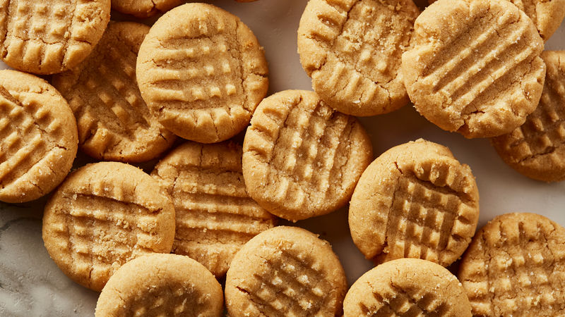

<!DOCTYPE html>
<html lang="en">
<head>
    <meta charset="UTF-8">
    <meta http-equiv="X-UA-Compatible" content="IE=edge">
    <meta name="viewport" content="width=device-width, initial-scale=1.0">
    <title>Peanut Butter Cookies</title>
</head>
<body>
    
</body>
</html><h1>Peanut Butter Cookies</h1>


<h2>Description</h2>
    </p>With just three ingredients, these simple peanut butter cookies will delight kids and grown-ups alike – and they're gluten-free, too</p>
<h3>Ingredients</h3>
<ul>
    <li>200g peanut butter (crunchy or smooth is fine)</li>
    <li>175g golden caster sugar</li>
    <li>¼ tsp fine table salt</li>
    <li>1 large egg</li>
</ul>
<h2>Steps</h2>
<ol>
    <li><strong>Step One</strong></li>
        <p>Heat oven to 180C/160C fan/gas 4 and line 2 large baking trays with baking parchment.        </p>
    <li><strong>Step Two</strong></li>
        <p>Measure the peanut butter and sugar into a bowl. Add ¼ tsp fine table salt and mix well with a wooden spoon. Add the egg and mix again until the mixture forms a dough.</p>
    <li><strong>Step Three</strong></li>
        <p>Break off cherry tomato sized chunks of dough and place, well spaced apart, on the trays. Press the cookies down with the back of a fork to squash them a little. The cookies can now be frozen for 2 months, cook from frozen adding an extra min or 2 to the cooking time.</p>
    <li><strong>Step Four</strong></li>
        <p>Bake for 12 mins, until golden around the edges and paler in the centre. Cool on the trays for 10 mins, then transfer to a wire rack and cool completely. Store in a cookie jar for up to 3 days. ENJOY!</p>
</ol>